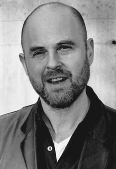
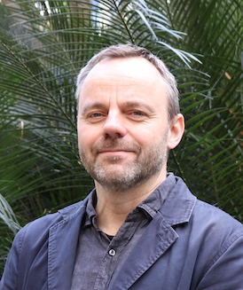

Juan Camilo Espejo Serna
Facultad de Filosofía y Ciencias Humanas
Universidadad de la Sabana
juan.espejo1@unisabana.edu.co
Una teoría científica utilizada para explicar un aspecto de la subjetividad humana.
Mi objetivo es hablar de la relación entre ciencia natural y filosofía a la hora de aproximarse a lo humano, en particular a la consciencia fenoménica. PERO desde un caso específico y contemporáneo. Examinaré la posibilidad de tomar el modelo del procesamiento predictivo (un modelo científico ) para ofrecer una explicación de la consciencia fenoménica del tiempo, una parte de la subjetividad humana.
"How can we understand the world in which we find ourselves? How does the universe behave? What is the nature of reality? [...]
Traditionally these are questions for philosophy, but philosophy is dead. Philosophy has not kept up with modern developments in science, particularly physics. Scientists have become the bearers of the torch of discovery in our quest for knowledge". (Hawking 2010)
"El problema de la mente no es filosófico, es fisiológico. En el fondo la mente tiene que ver con procesos palpables, con canales de calcio, con células, con membranas." Revista Semana 20 de mayo de 2018.
"Si hoy queremos saber acerca del ser humano hay que superar los compartimentos estancos de las disciplinas académicas. A eso se le llama, en el mismo mundo de la academia, interdisciplinariedad. Es un proyecto anhelado por muchos y es lo que busca este libro: hacer entrar en diálogo la ciencia con la filosofía"
(Rodríguez 2017:15)
No es una tarea trivial
Algunos, como Johh Locke, afirman que la filosofía debe estar al servicio de la ciencia ("a handmaiden to the sciences"). Y aunque la postura de Locke ha de tomarse en el contexto del desarrollo de las ciencias naturales y la filosofía del siglo XVII, también tenemos una postura similar, en pleno siglo XX. Willard van Orman Quine afirma que la filosofía sólo debe estar dirigida a entender y mejorar la ciencia. (En sus palabras: "Philosophy of science is philosophy enough".)
Otros piensan que, si bien la filosofía y la ciencia tienen una existencia independiente, realizan diferentes tareas. La filosofía comprende, la ciencia explica. Una explica lo humano y la otra lo comprende. La filosofía es un complemento de la ciencia.
Juntas pero no revueltas.
Yo, como tantos otros, pienso que se necesita una integración genuina de filosofía y ciencia en una misma tarea. La filosofía y la ciencia explican y comprenden –aunque quizá no siempre de la misma manera.
Juntas y revueltas.
Si desean, podemos hablar en la sección de preguntas sobre como se concibe a la filosofía
Para propósitos de esta presentación, intentaré presentar por medio de un ejemplo detaller a qué me refiero por integración genuina de ciencia y filosofía en un mismo programa explicativo.
No creo que sea una buena idea empezar a buscar explicación de lo humano desde los aspectos más complejos de nuestra existencia.
Estos fenómenos son demasiado complejos. Y no me parece poco razonable esperar que lo que hoy nos parece complejo o imposible le parezca ordinario a una nueva generación.
Hace sesenta años hubiese parecido imposible tener más de mil millones de veces la capacidad de almacenamiento del CSIRAC (alrededor de 3KB) en un aparato de bolsillo como un celular (alrededor de 16 GB). ¡Infinitamente complejo!
La expectivativa de lograr una explicación científica de lo
que hoy es inexplicable no está basada en la evidencia científica que tenemos.
Precisamente por eso necesitamos de la filosofía junto a la ciencia: para ofrecer evidencia extra-científica sobre cuestiones en las que la ciencia no es la más capacitada para guiarnos.
Pero no todo lo que razonablemente aceptamos debe estar basado en la evidencia científica.
Es razonable creer que el mundo existe, que la naturaleza es uniforme, y que no somos cerebros en una cubeta. Así mismo, es razonable creer que la ciencia puede llegar a explicar lo complejo en lo humano, una vez tengamos una explicación de lo más sencillo.
Por eso quiero examinar la posibilidad de explicar científicamente algo que para los humanos es obvio, sencillo y cercano:
el aspecto subjetivo de la experiencia
en una teoría representacional de la experiencia: los aspectos cualitativos, no-representacionales de la experiencia
''qualia''
...what is it that philosophers have called qualitative states?: As Louis Armstrong said when asked what jazz is, “If you got to ask, you ain’t never going to get to know. (Block)
the hurtfulness of pains, the itchiness of itches, pangs of jealousy, [...] the characteristic experience of tasting a lemon, smelling a rose, hearing a loud noise or seeing the sky. (Jackson)
Esto es, el carácter cualitativo de la experiencia de sucesión.
Experiencing successions of events, as with a series of notes comprising a melody, poses a puzzle. It seems that neither experiencing the different notes simultaneously nor experiencing them in sequence can give rise to the experience of succession. If we experience all notes simultaneously, we experience not a melody but a chord. If we experience first one note, then another, this is a succession of experiences, not an experience of succession (cf. James 1890). So how can we conceive of the experience of successions of events, and of temporally extended processes in general? (Wiese 2017)
When we listen to music, including when we hear a piece played for the first time, we don’t hear each note in isolation, one after the other. Rather, when we hear a note of the melody, the phenomenal character of our experience of that note is affected by the properties of the notes immediately prior to that note. This is not that surprising, and may be an effect of a kind of remembered experience affecting the character of one’s current experience. But what is surprising is that when we hear a note of the melody, the phenomenal character of our experience of that note is affected by the properties of the notes immediately after that note. So our experience of the note is affected by what is yet to come as well as what has already been. (Paul 2014)
What you experience, rather, is, to a first approximation, the rising of the current sounds out of the past; you hear the current sounds as surging forth from the past. You hear them as a continuation. This is to say, moving on to a better approximation, you hear them as having a certain trajectory or arc, as unfolding in accordance with a definite law or pattern. It is not the past that is present in the current experience; rather, it is the trajectory or arc that is present now, and of course the arc describes the relation of what is now to what has already happened (and to what may still happen). In this way, what is present, strictly speaking, refers to or is directed toward what has happened and what will happen. (Noë 2006)
Ejemplo: La ilusión del conejo cutáneo
(Geldard, F. A., & Sherrick, C. E. (1972).
P: ¿Que decimos de la consciencia fenoménica después de 2 pero antes que 3?
R: Depende de lo que sucede antes y después, es decir, lo que sucede en los momentos 1 y 3.
En la próxima sección, examinaremos un modelo neurocomputacional que pretende explicar este fenómeno.
Filosofía y ciencia, juntas y revueltas.
 "It is the theory that the brain is a sophisticated hypothesis-testing mechanism, which is constantly involved in minimizing the error of its predictions of the sensory input it receives from the world. This mechanism is meant to explain perception and action and everything mental in between. It is an attractive theory because powerful theoretical arguments support it. It is also attractive because more and more empirical evidence is beginning to point in its favour. It has enormous unifying power and yet it can explain in detail too." (Hohwy 2013, 1)
¿Ven algo en la siguiente imagen?
Ahora una ayuda
¿Vieron un perro dálmata?
Los estímulos por sí mismo no determinan lo que se ven. Es la conjunción de su modelo del mundo que se ve actualizado por el input sensorial pero también la información extra ofrecida por el patrón de movimiento y la guía adicionales que les he dado al hablar.
Error predictivo: diferencia entre el input sensorial presente y la predicción
Minimización del error predictivo: El error predictivo se computa a lo largo de varios niveles de procesamiento y es usado para actualizar el modelo del mundo y generar mejores predicciones en el futuro. Importantemente, el ciclo de generar hipótesis, predicciones y errores y la actualización del modelo del mundo es llevado a cabo a lo largo de la totalidad de niveles de procesamiento.
La diferencia es que se ha postulado un proceso computacional específico para explicar la forma en que se llevan a cabo las inferencias y que, la evidencia apunta, es instanciado a nivel neuronal.
Pero la idea es que con base en el modelo podemos postular restricciones en las formas en que podríamos hablar del procesamiento neuro-computacional y la consciencia fenoménica. Es decir, entre una descripción típicamente científica y una descripción típicamente filosófica.
¿Cómo utlizar este modelo para la explicación de lo humano?¿Cómo entender la idea de Hohwy según la cual el modelo tiene una aplicación directa a la consciencia fenoménica en la percepción? ¿Se puede?
Mi objetivo ha sido hablar de la relación entre ciencia natural y filosofía a la hora de aproximarse a lo humano, en particular a la consciencia fenoménica. PERO desde un caso específico y contemporáneo y por eso he ofrecido un marco general.
Es momento de examinar la posibilidad de tomar el modelo del procesamiento predictivo (un modelo científico ) para ofrecer una explicación de la consciencia fenoménica del tiempo, una parte de la subjetividad humana.
Wiese, W. (2017). Predictive Processing and the Phenomenology of Time Consciousness - A Hierarchical Extension of Rick Grush’s Trajectory Estimation Model. En T. Metzinger & W. Wiese (Eds.). Philosophy and Predictive Processing. Frankfurt am Main: MIND Group.
Todos juntos y bien revueltos.
¡Qué bonito!
En lo que sigue, daré una explicación relámpago de estos modelos.
Y dado de que los estimados de lo que sucede en diferentes tiempos son calculados simultáneamente, el modelo de Grush presuntamente explica la experiencia de una sucesión. (Más que una sucesión de experiencias.)
T es una trayectoria que tiene lugar en un momento dado pero que representa lo que sucedió antes, durante y se estima que sucederá después. Así, la experiencia de sucesión parece ser explicada.
Para adaptar la propuesta de Grush al modelo de procesamiento predictivo, debemos hablar de una jerarquía de trayectorias en una cadena de retroalimentación que busca minizar el error.
La experiencia de una sucesión "is not best conceived as a linear stream of events, but rather as a hierarchy of temporal wholes." (Wiese 2017: 3).
Cabe anotar que los índices temporales en cada uno de los niveles de la jerarquía son diferentes. Para nuestros propósitos, sólo necesitamos prestar atención al hecho de que esto busca dar cuenta de la sucesión.
Pero
¿Es la totalidad de la jerarquía, un subconjuto de una trayectoria o una o varias trayectorias completas?
La jerarquía incluye niveles que no son plausiblemente conscientes.
Un subjconjunto de una trayectoria no incluye el rango de referencias a diferentes tiempos que justo es el punto de toda la teoría.
¿Cómo hacer la selección?
En el caso de la propuesta de Wiese, esto significaría que la percepción consciente está determinada por la tratectoria (o trayectorias) con la probabilidad posterior más alta.
La dificultad general del modelo de Wiese es que intenta ofrecer una explicación que atribuye al sujeto una propiedad/estado mental que dé cuenta de que al sujeto le parece como si hubiese consciencia en un momento de una sucesión, es decir, consciencia en un punto temporal de una extensión temporal. Y a la vez dar cuenta de la idea de que cada parte temporal de la experiencia consciente sucede en un tiempo diferente.
¡Es un problema ontológico!
Todavía falta trabajo para dar cuenta de la consciencia fenoménica.
La filosofía no sólo debe complementar a la ciencia; la debe transformar. "Juntas y revueltas" ha sido el eslogan de esta presentación y espero haber mostrado una forma plausible de qué es lo que implica: integración genuina de ciencia y filosofía en donde una guía a la otra en una misma empresa explicativa.
Juan Camilo Espejo Serna
Facultad de Filosofía y Ciencias Humanas
Universidadad de la Sabana
juan.espejo1@unisabana.edu.co